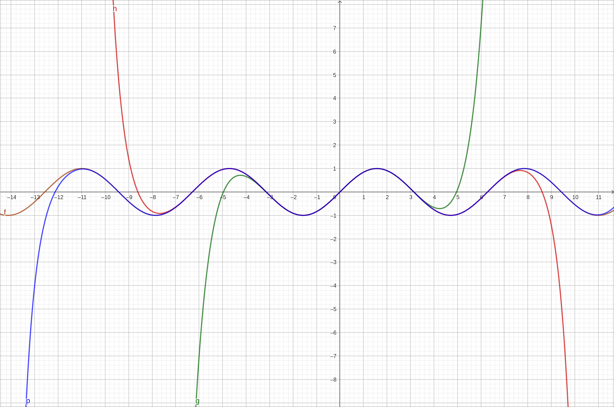
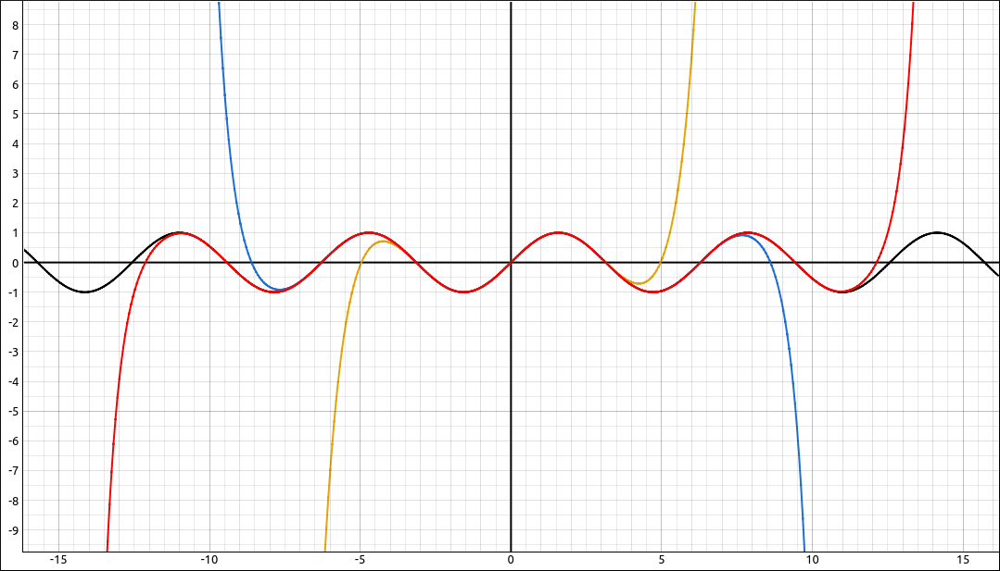
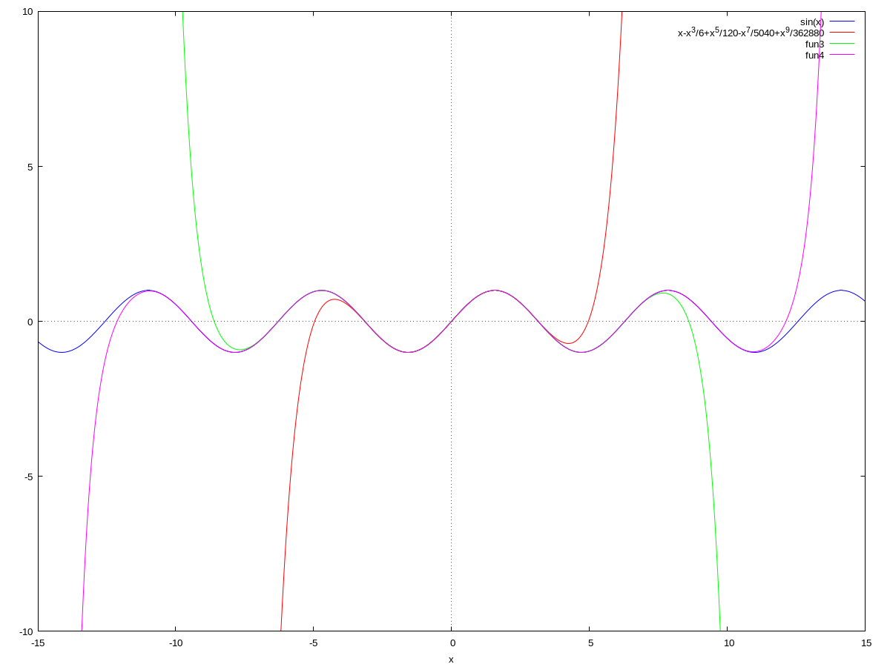
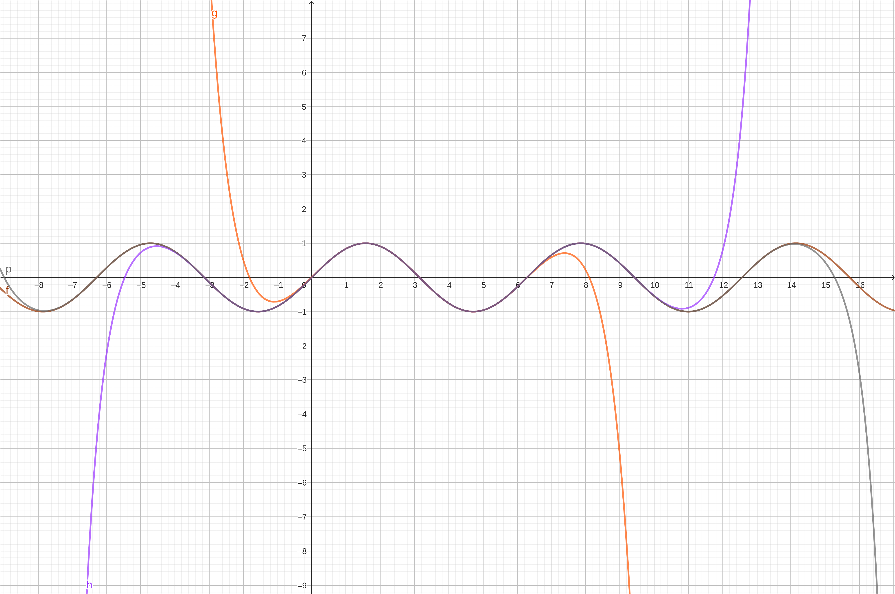
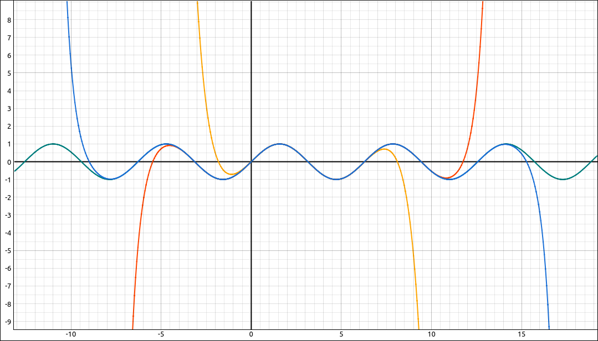
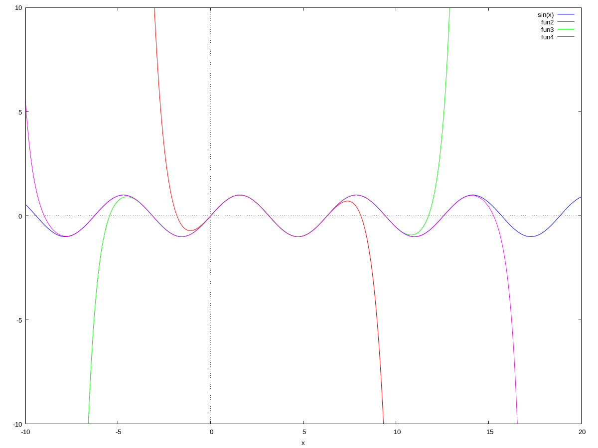

Taylor Series#
Discussion & Definitions#
The Taylor and Maclaurin series derivations give us a method for starting with a function and then calculating the coefficients of the power series representation for that function. Unlike the previous section, we will not need to rely on the geometric series and series manipulations to represent functions with series. Here is how it goes.
Derivation#
Say we wish to represent a function \(f(x)\) as a series,
Finding \(c_0\) is easy, evaluate both sides of the equation at \(x = a\),
so \(c_0 = f(a)\). Now to get \(c_1\), take the derivative of both sides,
evaluating at \(x = a\) gives \(c_1 = f'(a)\). Taking the second derivative,
evaluating at \(x = a\) gives \(c_2 = \frac{f''(a)}{2}\). Taking the third derivative,
evaluating at \(x = a\) gives \(c_3 = \frac{f'''(a)}{2 \cdot 3}\). Taking the fourth derivative,
evaluating at \(x = a\) gives \(c_4 = \frac{f^{(4)}(a)}{2 \cdot 3 \cdot 4}\). A this point we can see the pattern. In general,
One thing this implies is that the function \(f(x)\) has derivatives of all orders. Also, as in the last section, the series expansion may not converge to the function on the entire domain of the function.
Definition: Taylor Series
If \(f\) has derivatives of all orders at \(x = a\), then the Taylor Series for the function \(f\) at \(a\) is
The Taylor series for \(f\) at 0 is known as the Maclaurin Series for \(f.\)
Frequently we need to work with the first several terms of the series so we give them a name as well.
Definition: Taylor Polynomial
If \(f\) has n derivatives at \(x = a\), then the nth Taylor Polynomial for the function \(f\) at \(a\) is
The nth Taylor polynomial for \(f\) at 0 is known as the nth Maclaurin Polynomial for \(f.\)
If you are finding Taylor series by hand you would take several derivatives and evaluate them at \(x = a\) to find a pattern for \(f^{(n)}(a)\), then divide by \(n!\) to get the general nth coefficient. For example, let \(f(x) = e^x\) and we will use \(a = 0\).
So the pattern here is easy, 1, and our Taylor series is,
As another example take \(f(x) = \sin(x)\) and we will again use \(a = 0\).
Obviously we get repetition every fourth derivative. As for a pattern, all even derivatives are 0 and for all the odd derivatives we get 1 or \(-1\). It is easy to see that \(f^{(2m+1)}(0) = (-1)^m\), so our series is,
We did not discuss the intervals of convergence for either of these examples. You can find that interval of convergence the same way as with a general power series, use the ratio test (or the root test). For example, with
Hence the radius of convergence is infinite and the interval of convergence is \((-\infty, \infty).\) The same is true for \(\sin(x)\) but this does not happen for all functions. The following is a list of some of the most used functions, their Taylor series (really Maclaurin series) expansions, and the radius of convergence of the series, we derived most of these in this section or the previous section.
Convergence#
One concept we glossed over is that of convergence. We simply did a few derivatives and some algebra to obtain expressions for the coefficients of the series. We did not verify that the series approaches the function on its interval of convergence. Algebraically, this can get a bit complex and we will not go into much detail here but we will outline the theory. Your textbook should have more details on this. We will visualize this convergence graphically to get a feel for the concept.
Theorem: Taylor Polynomial Remainder
Let \(f\) be a function that can be differentiated \(n + 1\) times on an interval \(I\) containing the real number \(a\). Let \(p_n(x)\) be the nth Taylor polynomial of \(f\) at \(a\) and let
be the nth remainder. Then for each \(x\) in the interval \(I\). If there exists a real number \(M\) such that \(\left| f^{(n+1)}(x) \right| \leq M\), for all \(x \in I\) then,
for all \(x \in I.\)
Theorem: Convergence of Taylor Series
If \(f\) has derivatives of all orders on an interval \(I\) containing \(a\). Then the Taylor series
converges to \(f(x)\) for all \(x \in I\) if and only if
for all \(x \in I.\)
So if we were verifying this algebraically we would need to take the remainder inequality and show that this expression goes to 0 as \(n \to \infty.\) Since the bound \(M\) could change when n changes this can be a little tricky.
Example: Visualizing the Convergence of the Series for \(\sin(x)\)#
We will approach this in a similar manner as we did with \(\frac{1}{1-x}\) in the last section, except that we will use functions from the CAS to calculate the Taylor polynomials.
GeoGebra#
Input the function,
sin(x)
Now we will graph the degree 10, 20, and 30 Taylor polynomials along with the graph. To create the degree 10 Taylor polynomial use the following syntax, we assume that the function is \(f(x).\)
TaylorPolynomial(f,0,10)
Repeat with TaylorPolynomial(f,0,20) and TaylorPolynomial(f,0,30). You should see the following image.

Convergence of Taylor polynomials to the function \(\sin(x)\)#
Note how the higher degree polynomials hug the graph for a longer interval. Although this is far from an algebraic proof it does give you the feel that as the degree increases the polynomials will get closer to the function on the entire real line. It also shows that we can do some interesting things with polynomials.
CLAE#
Input the function,
sin(x)
Now we will graph the degree 10, 20, and 30 Taylor polynomials along with the graph. To create the degree 10 Taylor polynomial, select the function, then select Calculus > Taylor Series, variable is x, point is 0, and the order is 10. The result is,
Do the same with order 20 and 30, the results are,
and
Graph the three polynomials along with the function and you should have the following image.

Convergence of Taylor polynomials to the function \(\sin(x)\)#
Note how the higher degree polynomials hug the graph for a longer interval. Although this is far from an algebraic proof it does give you the feel that as the degree increases the polynomials will get closer to the function on the entire real line. It also shows that we can do some interesting things with polynomials.
Maxima#
Input the function,
kill(all);
f(x):=sin(x)
To create the Taylor polynomials we can use the taylor function,
t10:taylor(f(x),x,0,10);
t20:taylor(f(x),x,0,20);
t30:taylor(f(x),x,0,30);
Then we can plot these along with the function by,
wxplot2d([f(x), t10, t20, t30],[x,-15,15],[y,-10,10]);
The image should look something like the following,

Convergence of Taylor polynomials to the function \(\sin(x)\)#
Note how the higher degree polynomials hug the graph for a longer interval. Although this is far from an algebraic proof it does give you the feel that as the degree increases the polynomials will get closer to the function on the entire real line. It also shows that we can do some interesting things with polynomials.
Example: Visualizing the Convergence of the Series for \(\sin(x)\) about \(x = \pi\)#
We will do the same process here as we did in the last example except that we will center the series at \(x = \pi\) instead of \(x = 0.\)
GeoGebra#
Input the function,
sin(x)
Now we will graph the degree 10, 20, and 30 Taylor polynomials along with the graph. To create the degree 10 Taylor polynomial use the following syntax, we assume that the function is \(f(x).\)
TaylorPolynomial(f,pi,10)
Repeat with TaylorPolynomial(f,pi,20) and TaylorPolynomial(f,pi,30). You should see the following image.

Convergence of Taylor polynomials to the function \(\sin(x)\)#
CLAE#
Input the function,
sin(x)
Now we will graph the degree 10, 20, and 30 Taylor polynomials along with the graph. To create the degree 10 Taylor polynomial, select the function, then select Calculus > Taylor Series, variable is x, point is pi, and the order is 10. The result is,
Do the same with order 20 and 30, the results are,
and
Graph the three polynomials along with the function and you should have the following image.

Convergence of Taylor polynomials to the function \(\sin(x)\)#
Maxima#
Input the function,
kill(all);
f(x):=sin(x)
To create the Taylor polynomials we can use the taylor function,
t10:taylor(f(x),x,%pi,10);
t20:taylor(f(x),x,%pi,20);
t30:taylor(f(x),x,%pi,30);
Then we can plot these along with the function by,
wxplot2d([f(x), t10, t20, t30],[x,-10,20],[y,-10,10]);
The image should look something like the following,

Convergence of Taylor polynomials to the function \(\sin(x)\)#